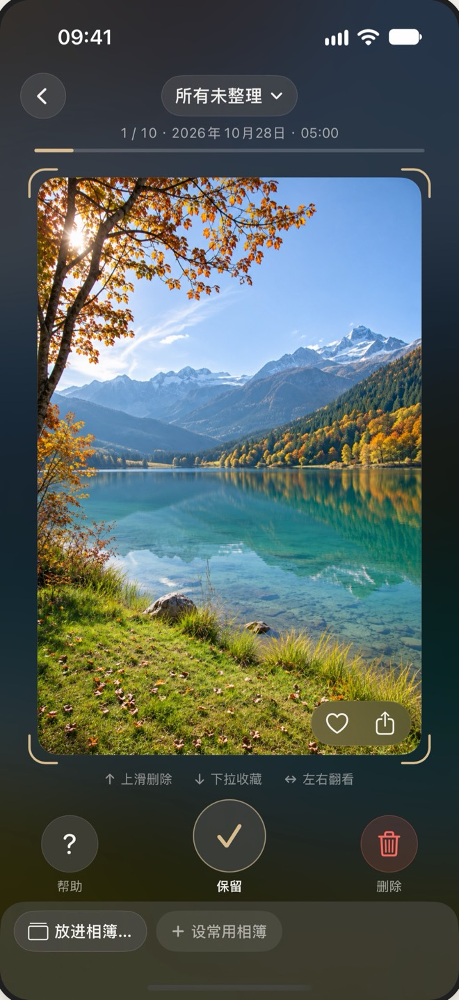
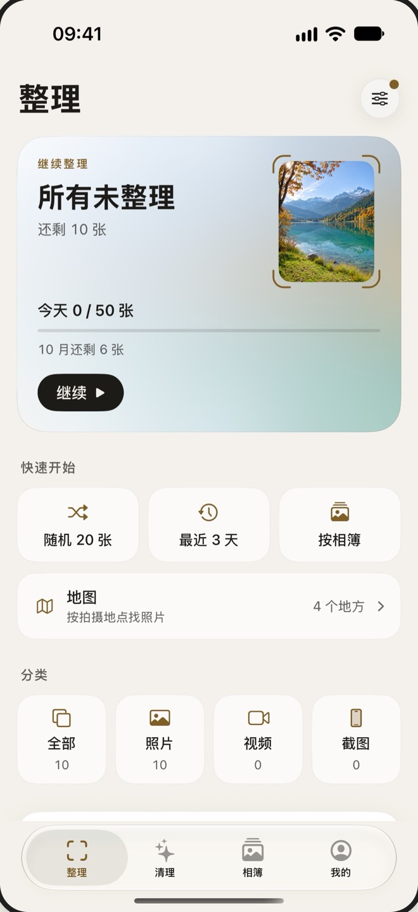
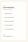
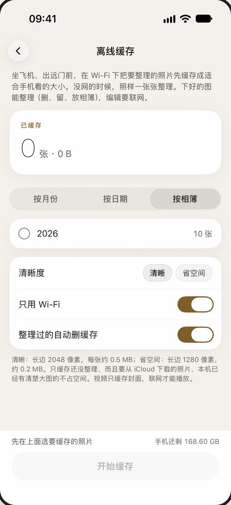

哪些最占地方，一眼看清
重复、相似、截图、屏幕录制、实况照片、大视频、表情包，分开列出来。
ZenPic · 淘片：照片清理
照片再多，也能理完。几万张照片分成一小批一小批，几分钟理完一批，想停就停，下次打开接着来。
用 iPhone 相机扫一扫直接打开 App Store 的下载页
Film · 38 秒
怎么滑着理、怎么把占地方的找出来、没网怎么理、照片怎么变 PDF，一条短片讲完。
01 · Swipe to sort
挑一个月份、一本相簿，或者随手来一批。上滑删除，下拉收藏，左右翻看，滑错了能撤销。

这台手机能滑，试试看↑上滑删除↓下拉收藏↔左右翻看
删之前，再看一眼。删掉的照片先待在淘片回收站，你确认后才交给系统。系统删之前还会再问一次，之后在“最近删除”里再放 30 天。
保留0收藏0还剩6
02 · Clear the clutter
重复照片、相似照片、截图、录屏、实况照片、大视频，各归各类。建议先列好，你看过再定。
重复、相似、截图、屏幕录制、实况照片、大视频、表情包，分开列出来。

相似的照片归成一组，推荐留哪张；你确认了才动。

三档任选，照片也能压。压好的另存一份，原片不动，看过再决定留哪份。

按月份、按相簿、按地图上的地方，或者随机来 20 张。进度会记住，下次接着来。
03 · Offline
出门前把 iCloud 里的照片存一份到手机上。坐飞机、搭地铁没信号，一样能理。
这些老照片，原图在 iCloud。开一下飞行模式看看。





存的是缩小后的图，用来看和整理，不是原片备份。没提前存的 iCloud 照片，以及编辑照片、播放完整视频、地图和地址搜索，都可能要联网。
04 · Photo to PDF
上课、看展、开会拍的一堆照片，删了怕要用，留着又占地方。
没把握的不乱裁，原样放进去。
按拍的先后排成一份。画质有小、标准、高清三档。
PDF 存好，原照片一键清掉，空间腾出来。清空“最近删除”后，空间才真正腾出来。
05 · Privacy
整理和分析都在你的 iPhone 上完成。
地图、地名和地址搜索由 Apple 地图提供，你看的地点和搜的文字会发给 Apple。iCloud 照片还是照你原来的设置工作。
看隐私政策全文 →回忆留下，资料存档，
手机腾出来了